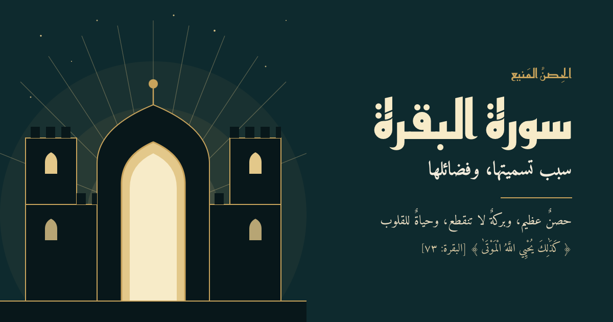

لأن الله ضربها مثلًا في قدرته على إحياء الموتى { فَقُلْنَا اضْرِبُوهُ بِبَعْضِهَا كَذَلِكَ يُحْيِ اللَّهُ الْمَوْتَى وَيُرِيكُمْ آيَاتِهِ لَعَلَّكُمْ تَعْقِلُونَ }[سُورَةُ البَقَرَةِ: ٧٣] وكذلك قارئها وتاليها يحيي الله بها قلبه، وجوانح روحه وجوّانية إيمانه، ويبعث حياته في كل جوانبها من صحة وعقل وقلب ومال وأهل، بعد أن قنط منها ويأس، فهي أمل المنفيين، ورجاء الحزانى والمظلومين، وهي الورد اليومي لبعض الصالحين زيادةً على أورادهم الأخرى، ومنهم من يختم القرآن كاملًا في أسبوعين بنحوِ ثلاثة أجزاء مع ورد يومي من البقرة لا يتركه، حتى أنا سمعنا من المعاصرين من يقول البقرة هي ضمن أذكاري في الصباح والمساء!
ويكفي قراءتها مرة واحدة باليوم والليلة لنيل بركتها وقوة حفظها.
وسميت بالبقرة؛ لأنها أعظم الأنعام حجمًا فهي أعظم من الإبل والغنم، وأدسم سمنًا، لحيمةً شحيمةً سمينةً عظيمةً وأكثرها ألبانًا، ومنافعها كثيرة فهي تتخذ للركوب والحراثة والزراعة وجلدها لباسًا، وهذا ليس في غيرها. (ذكرها الشيخ محمد بن علي الشنقيطي في تفسيره للبقرة)
ولذا فإن في سورة البقرة من المنافع والبركات وقوة التحصين والحفظ وعلو السور والمكان ما ليس في غيرها من السور فهي أمتن السور وأقوى التحصين الذي تحصّن به مسلم. فلهذا بعضهم جعلها وردًا يوميًا يخسر الدنيا ولا يتركه.
وسميت بالبقرة من البقر وهو شق البطن بعمق حتى يبحث صاحبها عن فهمها ومعانيها وليس مجرد قراءتها ويكون في رحلة من البحث العميق عن معانيها، وهذا المعنى ذكره الموفق د. أحمد عبدالمنعم.
حتى أن من حفظ البقرة عظمت مكانته عند الصحابة ويُسمى بصاحب البقرة! ورفيقها، فكيف لا يعتني بتلاوتها وبتفسيرها وفهمها وتدبر آياتها وهذه فضائلها قد بانت
«كان الرجلُ إذا قرَأَ البَقرة وآل عمران، جَدَّ فينا- يعني: عظُم- وفي رواية: يُعَدُّ فينا عَظيمًا، وفي أخرى: عُدَّ فينا ذا شأنٍ»
يقول صلى الله عليه وسلم في الحديث الصحيح: ((اقْرَؤوا القرآنَ؛ فإنَّه يأتي يومَ القيامةِ شَفيعًا لأصحابه، اقرَؤوا الزَّهرَاوَين: البقرةَ، وسورةَ آلِ عمرانَ؛ فإنَّهما تأتِيان يومَ القِيامةِ كأنَّهما غَمامتانِ ، أو كأنَّهما غَيايتانِ ، أو كأنهما فِرْقانِ من طَيرٍ صوافَّ ، تُحاجَّان عن أصحابِهما، اقرَؤوا سورةَ البقرةِ؛ فإنَّ أَخْذَها بَركةٌ، وتركَها حَسرةٌ، ولا يستطيعُها البَطَلَةُ))
وتأمل في الحديث كيف أنه أفرد قراءة القرآن وحدها (اقرؤوا القران) وأفرد قراءة الزهراوين وحدهما (البقرة وآل عمران) ثم تأكيدًا ومبالغة يلتفت في خطابه فيقول (اقرؤوا البقرة)! فهو هنا ذكر البقرة ٣ مرات لأهميتها، مرةً ضمن قراءة القرآن وختمه، ومرة مع الزهراوين ثم أفردها وحدها وبين عظمتها واصطفائها على باقي السور: أخذها بركة وتركها حسرة ولا تستطيعها البطلة، ولهذا لا تعجب أبدًا إن قرأت في سير الصالحين من يجعل لديه وردين من القرآن: ورد البقرة اليومي، وورد الختم من القرآن يختمه كل أسبوع أو كل أسبوعين، وأفضل أوقات قراءتها السحر وعند الفجر ليحصل بها تمام التحصين ومنيع الحفظ، فالله خير حافظًا وهو أرحم الراحمين.
— شروق المحمادي
💬 تعليقات المسافرين
كن أول من يحلّق ✈️